The objectives of this homework assignment are to:
Download the dataset for this exercise here
Read in the data and assign it to an object basal.
basal<-read.csv("basal.csv")plot(basal~temperature,basal)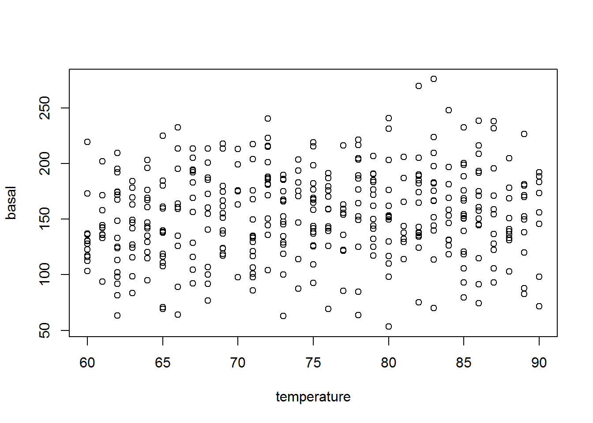
boxplot(basal~habitat,basal)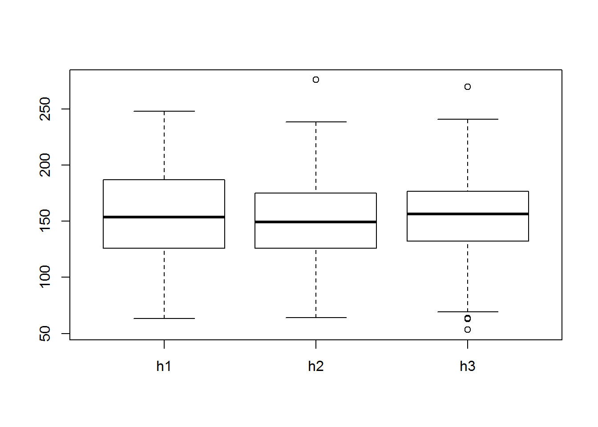
plot(basal~elevation,basal)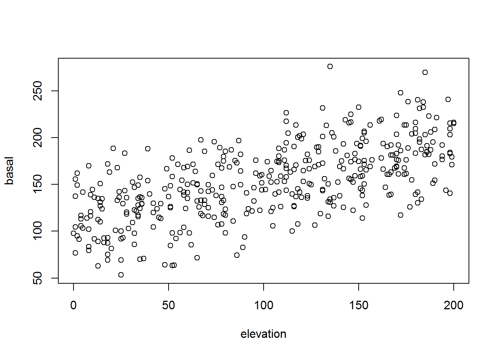
temperature, habitat, and elevation to basal and name the resulting object fit.fit<-lm(basal~temperature+habitat+elevation,basal)pred for range of temperature, habitat, and elevation in the dataset.pred<-expand.grid(temperature=c(min(basal$temperature):max(basal$temperature)),
habitat=levels(basal$habitat),
elevation=c(min(basal$elevation):max(basal$elevation)))pred and add those predictions as a field in to predpred$pred<- predict(fit, newdata=pred)lci and uci for the lower and upper 95% prediction interval and add them to pred.pred$upi<- predict(fit, newdata=pred,interval="predict")[,"upr"]
pred$lpi<- predict(fit, newdata=pred,interval="predict")[,"lwr"]temperature for a single value of habitat and elevation. The values of habitat and elevation are your choice.plot(pred~temperature, data=pred,
xlab="Temperature",
ylab="Predicted value",subset=habitat =="h1"
& elevation==50,type='l',
ylim=c(0,250))
points(upi~temperature,data=pred,lty=2,
subset=habitat =="h1" & elevation==50,type='l')
points(lpi~temperature,data=pred,lty=2,
subset=habitat =="h1" & elevation==50,type='l')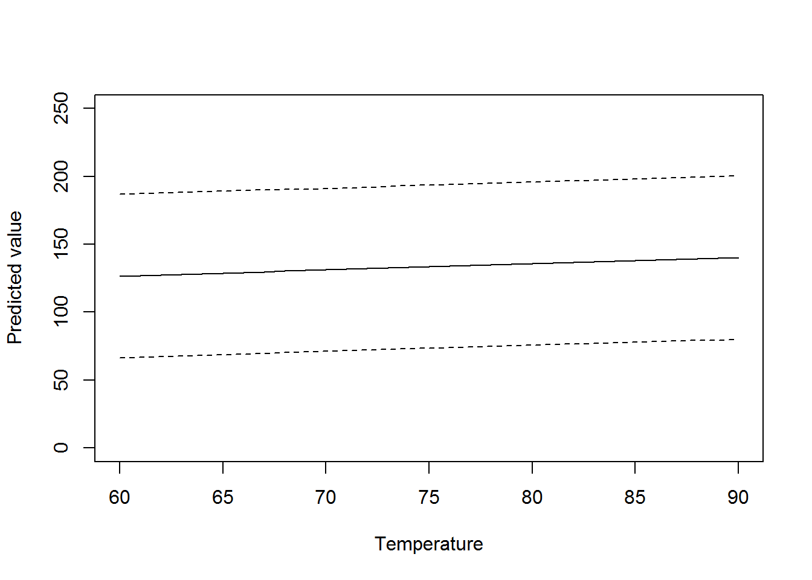
elevation for a single value of habitat and temperature. The values of habitat and temperature are your choice.plot(pred~elevation, data=pred,type='l',
xlab="Elevation",
ylab="Predicted value",subset=habitat =="h1"
& temperature==75,ylim=c(0,300))
points(upi~elevation,data=pred,lty=2,type='l',
subset=habitat =="h1" & temperature==75)
points(lpi~elevation,data=pred,lty=2,type='l',
subset=habitat =="h1" & temperature==75)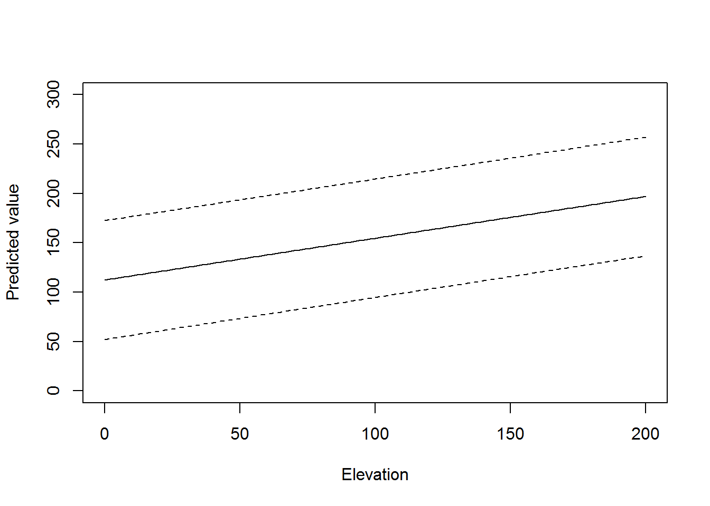
Make a new prediction dataset named randdata where temperature, habitat, and elevation are 100,000 values randomly drawn from a uniform distribution (runif()) for each input. Random values should be constrained to be between the minimum and maximum values for temperature, habitat, and elevation in the dataset.
n<-100000
randdata<-data.frame(
temperature=runif(n, min(basal$temperature),max(basal$temperature)),
habitat=sample(levels(basal$habitat),size=n,replace=TRUE),
elevation=runif(n,min(basal$elevation),max(basal$elevation)))model.matrix() function to create the design matrix named dm for the model fit in step 4. Be sure to use the randdata dataset in the model.matrix() function.dm<- model.matrix(as.formula("~temperature+habitat+elevation"),
data=randdata)dm and the \(\beta\)s extracted from fit and add the predictions to randdata as a field named dm.betas<-coef(fit)
randdata$dm<- dm %*% betaspredict() function to predict basal area and add the predictions to randdata as a field named pred.randdata$pred<- predict(fit,newdata=randdata)dm and pred from the randdata dataset and add a 1:1 line.plot(dm~pred, data=randdata,xlab="Used predict function",
ylab="Used design matrix")
abline(a=0,b=1)# a 1:1 line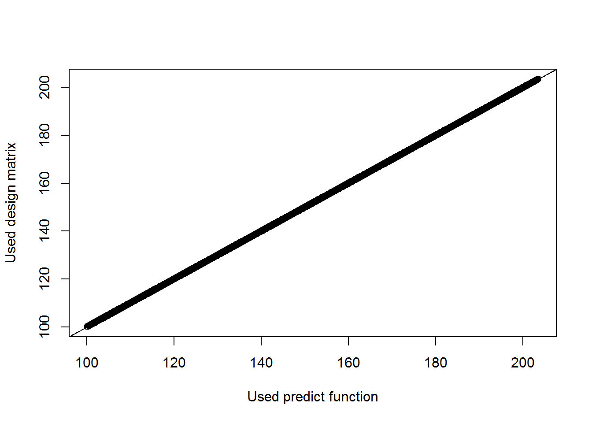
insectsinsects<- read.csv("insects.csv")plot(count~elevation,data=insects,
xlab="Elevation",
ylab="Count")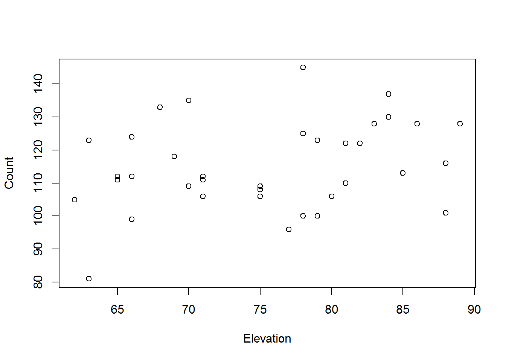
boxplot(count~habitat,data=insects,
xlab="Habitat type",
ylab="Count")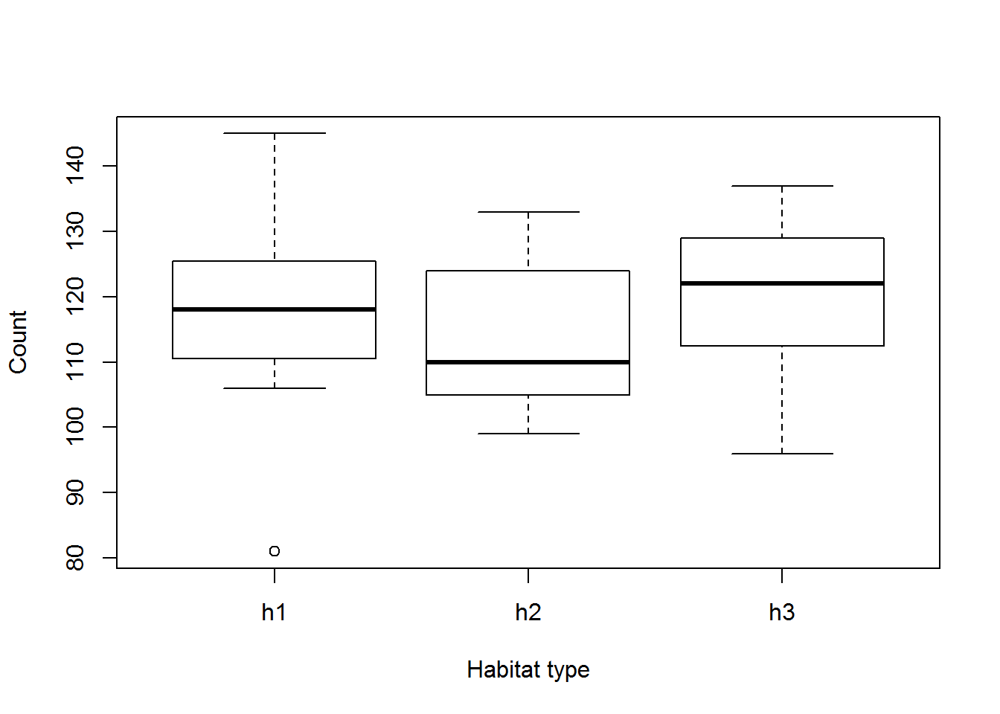
habitat, and elevation to count and name the resulting object fit. Count is Poisson distributed.fit<-glm(count~habitat+elevation,data=insects,family="poisson")vals<- data.frame(habitat="h2",elevation=100)
pred<- predict(fit, newdata=vals,type="response")
pred## 1
## 125.5339fit.vals<- data.frame(habitat="h2",elevation=100)
pred<- predict(fit, newdata=vals,type="response")
outcomes<- rpois(100,pred)bins<- seq(0,200,by=25)
labs<- paste(bins[-length(bins)],bins[-1],sep = "-")
newvalues<- cut(outcomes, bins, labels=labs)
newvalues## [1] 125-150 125-150 100-125 125-150 125-150 100-125 100-125 125-150
## [9] 125-150 125-150 125-150 100-125 125-150 100-125 100-125 100-125
## [17] 125-150 100-125 100-125 100-125 100-125 125-150 100-125 100-125
## [25] 125-150 100-125 100-125 150-175 125-150 125-150 125-150 100-125
## [33] 100-125 100-125 125-150 125-150 125-150 125-150 125-150 125-150
## [41] 125-150 125-150 125-150 125-150 100-125 125-150 125-150 125-150
## [49] 125-150 125-150 125-150 125-150 100-125 100-125 100-125 125-150
## [57] 100-125 125-150 100-125 100-125 100-125 100-125 125-150 100-125
## [65] 100-125 100-125 100-125 100-125 125-150 125-150 125-150 100-125
## [73] 100-125 75-100 100-125 100-125 125-150 100-125 125-150 125-150
## [81] 100-125 100-125 100-125 100-125 125-150 100-125 150-175 125-150
## [89] 100-125 125-150 100-125 125-150 100-125 100-125 125-150 125-150
## [97] 125-150 100-125 125-150 100-125
## Levels: 0-25 25-50 50-75 75-100 100-125 125-150 150-175 175-200probs<- table(newvalues)/100
probs[1]# 0-2## 0-25
## 0probs[5]# 100-125## 100-125
## 0.48probs[6]# 125-150## 125-150
## 0.49for() loop will help)n<- c(100, 250, 500, 750, 1000, 1500, 2000, 3000, 5000,
10000, 100000)
vals<- data.frame(habitat="h2",elevation=100)
pred<- predict(fit, newdata=vals,type="response")
output<- data.frame()
for(i in 1:length(n))
{
outcomes<- rpois(100,pred)
bins<- seq(0,200,by=25)
labs<- paste(bins[-length(bins)],bins[-1],sep = "-")
newvalues<- cut(outcomes, bins, labels=labs)
probs<- table(newvalues)/100
out<- data.frame(
n=n[i],
p025=probs[1],# 0-2
p100125=probs[5],# 100-125
p125150=probs[6])# 125-150
output<-rbind(output,out)
}
output## n p025 p100125 p125150
## 0-25 100 0 0.52 0.45
## 0-251 250 0 0.39 0.60
## 0-252 500 0 0.47 0.48
## 0-253 750 0 0.53 0.44
## 0-254 1000 0 0.42 0.54
## 0-255 1500 0 0.49 0.49
## 0-256 2000 0 0.43 0.56
## 0-257 3000 0 0.49 0.45
## 0-258 5000 0 0.50 0.49
## 0-259 10000 0 0.42 0.56
## 0-2510 100000 0 0.51 0.48plot(p025~n,data=output)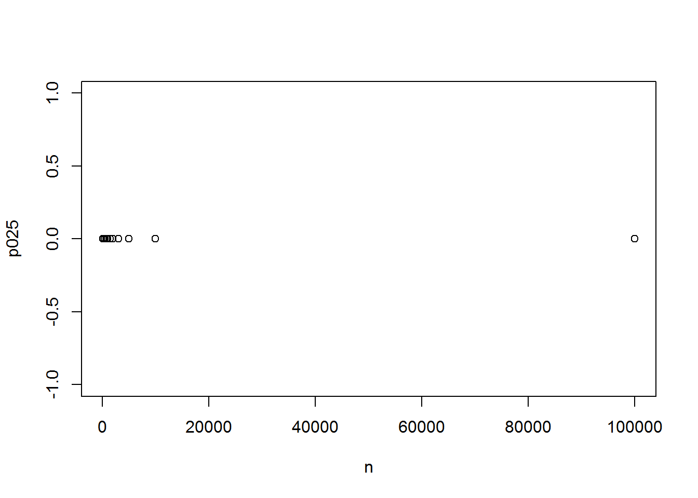
plot(p100125~n,data=output)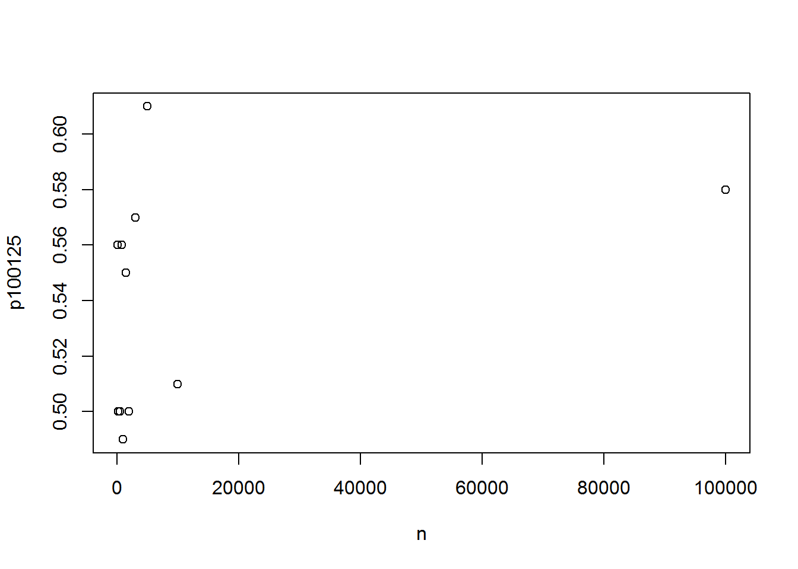
plot(p125150~n,data=output)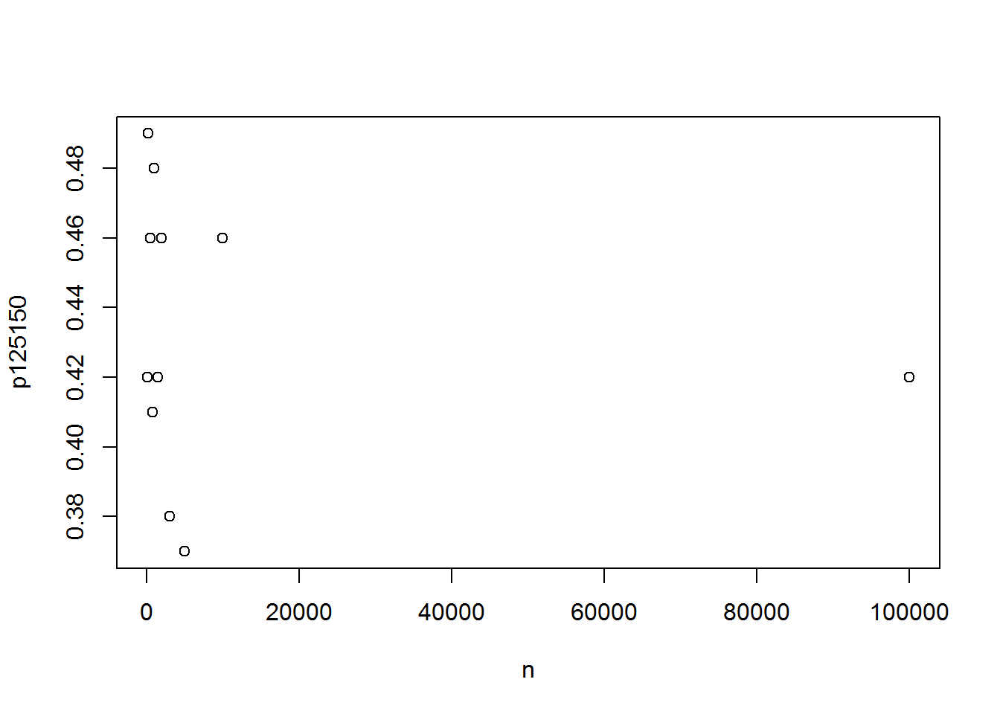
# AS MANY AS POSSIBLE! WITHIN COMPUTATIONAL CONTRAINTSThe part will work you through the skills you need to take analyses and use them in decision models. Below is a simple decision model that evaluates where to outplant spring Chinook Salmon in the Middle Fork Willamette River. Specifically we will be completing the inputs for nodes A, B, and C below. The rest of the nodes are already completed. So once Nodes A, B, and C are parameterized all that is left is to compile the model and you can evaluate outplant locations objectively accounting for uncertainty! Pretty awesome right?
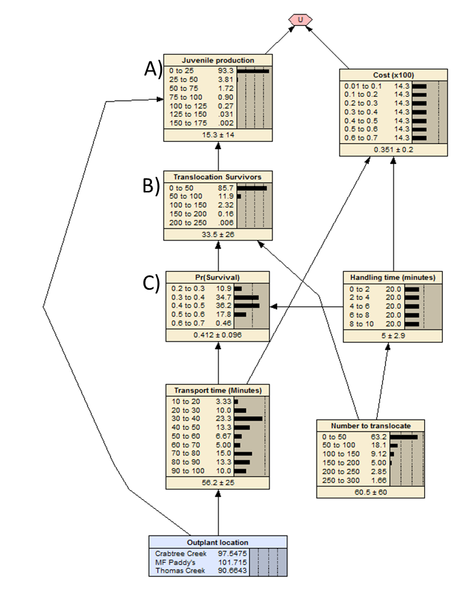 The decision model illustrated above is here as a \*.neta file.
The model evaluates 3 outplant locations given cost and juvenile production. Cost and juvenile production are scaled range from 0 to 1 and weights of 0.5 given cost and juvenile production. On this scale high production approaches 1 and high cost approaches 0. Managers are trying to maximize bang for the buck, so a marginal gain is calculated as the utility as \(U = \frac{Juvenile Production}{Cost}\). Aspects of the translocation program influence production, in particular there is mortality associated with moving fish and production varies among outplant locations. The exercises below step through how we use data to parameterize these models, building on the skills you used in Part I.
Files needed for this exercise
These exercises might seem a bit arduous but they will push you to put the elements together to go from predicting outcomes while accounting uncertainty and incorporating those outcomes in a decision model. The 4 main exercises work through generating outcomes, discretizing outcomes, summarizing outcomes, and parameterizing a decision model.
\*.csv for this exercise and assign it as an object tran_survtran_surv<-read.csv("transport-survivals.csv")handle_time and transport_time. HINT recall the use of cbind() to put successes and failures together for a binomial in the glm() function.tran_surv$death<-tran_surv$n_fish-tran_surv$survivors
fit<-glm(cbind(tran_surv$survivors,tran_surv$death)~handle_time+transport_time,
tran_surv,family='binomial') outcomes with 500,000 stochastic realizations using the runif() function for values of handle_time, transport_time, and n_fish that vary from 1 to 10, 10 to 100, and 0 to 300 respectively, fractional values are fine the time components of this simulation, fish should be whole numbers. (HINT for n_fish field using the runif() function and then round to the nearest whole number works very efficiently for this purpose round(4.56,digits=0)). DO NOT USE expand.grid() HERE!nreps<-500000
outcomes<-data.frame("handle_time"=round(runif(nreps,1,10),3),
"transport_time"=round(runif(nreps,10,100),3),
"n_fish"=round(runif(nreps,0,300),0))outcomes named survival and predict the survival for each combination of handle_time and transport_time in outcomes.outcomes$survival<-predict(fit,outcomes,type="response")survival and n_fish and name the field survivors using the rbinom() function. outcomes$survivors<-rbinom(n=nreps,
size=outcomes$n_fish,
prob=outcomes$survival) \*.csv for this exercise and assign it as an object juv_prodjuv_prod<-read.csv("juvenile-production.csv")prod is Poisson distributed and an additive function of out_loc and survivors.fit<-glm(prod~out_loc+survivors,juv_prod,family='poisson')out_loc to outcomes that is 500,000 stochastic realizations from the levels of outplant locations (HINT: sample())outcomes$out_loc<-sample(c("MF Paddy's","Crabtree Creek","Thomas Creek"),
size=nreps,
replace = TRUE)outcomes named juv_prod and generate 500,000 stochastic replicates from a Poisson distribution given the values of out_loc and survivors (recall survivors was created in 1.6 above) in outcomes. Note there is 1 stochastic realization per combination of out_loc and n_fish in outcomes.outcomes$juv_prod<- rpois(n=nreps, predict(fit,outcomes,type="response"))out_loc, handle_time, transport_tim,n_fish survival,survivors, and juv_prod in outcomes, and name and bin as follows (*NOTE: Netica bins continuous values as 0 to 50 and 50 to 100, which means values including 0 and less than 50 and values greater than or equal to 50 and less thancut() function, specifically include.lowest=TRUE. Be sure to add that argument to discretize the values by the bins below*):
out_loc: these values are already discrete, nothing to do with this one.head(outcomes$out_loc)## [1] "Crabtree Creek" "Crabtree Creek" "MF Paddy's" "MF Paddy's"
## [5] "Thomas Creek" "MF Paddy's"handle_time_b: 0 to 2, 2 to 4, 4 to 6, 6 to 8, and 8 to 10.brks<-seq(0,10,2)
myLabels<-c("0-2","2-4",
"4-6","6-8",
"8-10")
outcomes$handle_time_b<-cut(x=outcomes$handle_time,
breaks=brks,
labels=myLabels,
include.lowest = TRUE)transport_time_b: 10 to 20, 20 to 30, 30 to 40, 40 to 50, 50 to 60, 60 to 70, 80 to 90, 90 to 100.brks<-seq(10,100,10)
myLabels<-c("10-20","20-30",
"30-40","40-50",
"50-60","60-70",
"70-80","80-90",
"90-100")
outcomes$transport_time_b<-cut(x=outcomes$transport_time,
breaks=brks,
labels=myLabels,
include.lowest = TRUE)n_fish_b: 0 to 50, 50 to 100, 100 to 150, 150 to 200, 200 to 250, and 250 to 300.brks<-seq(0,300,50)
myLabels<-c("0-50","50-100",
"100-150","150-200",
"200-250","250-300")
outcomes$n_fish_b<-cut(x=outcomes$n_fish,
breaks=brks,
labels=myLabels,
include.lowest = TRUE)survival_b: 0.2 to 0.3,0.3 to 0.4, 0.4 to 0.5, 0.5 to 0.6, and 0.6 to 0.7.brks<-seq(0.2,0.7,0.1)
myLabels<-c("0.2-0.3","0.3-0.4",
"0.4-0.5","0.5-0.6",
"0.6-0.7")
outcomes$survival_b<-cut(x=outcomes$survival,
breaks=brks,
labels=myLabels,
include.lowest = TRUE)survivors_b: 0 to 50, 50 to 100, 100 to 150, 150 to 200, and 200 to 250.brks<-seq(0,250,50)
myLabels<-c("0-50","50-100",
"100-150","150-200",
"200-250")
outcomes$survivors_b<-cut(x=outcomes$survivors,
breaks=brks,
labels=myLabels,
include.lowest = TRUE)juv_prod_b: 0 to 25, 25 to 50, 50 to 75, 75 to 100, 100 to 125, 125 to 150, 150 to 175.brks<-seq(0,175,25)
myLabels<-c("0-25","25-50",
"50-75","75-100",
"100-125","125-150",
"150-175")
outcomes$juv_prod_b<-cut(x=outcomes$juv_prod,
breaks=brks,
labels=myLabels,
include.lowest = TRUE)cut()), use the discretized values to calculate the frequency of each discrete outcome using the steps below
reshape2 library is loaded. Use install.packages("reshape2") if you do not have it already and load(reshape2) to load the library. This will load the function dcast() which is useful for making contingency tables.# install.packages("reshape2")n_fish_b, out_loc and the discretized vector of outcomes juv_prd_b to make a table of frequencies of each outcome. cpt_c<- dcast(outcomes, transport_time_b + handling_time_b ~ survival_b, value.var="survival", fun.aggregate=length, drop=FALSE). We need to include the drop=FALSE argument make sure we do not drop any of the bin levels. The code summarizes values using the length function to tally up how many values were in that combination.cpt_a<- dcast(outcomes, transport_time_b + handle_time_b ~ survival_b,
value.var="survival", fun.aggregate=length, drop=FALSE)cpt_c as a cpt_c.csv so you can get access to the counts so we can add them to the CPT for node C in the decision model.write.csv(cpt_a,"cpt_a.csv")cpt_b<- dcast(outcomes,survival_b+n_fish_b ~ survivors_b, value.var="survivors", fun.aggregate=length, drop=FALSE) 2.cpt_a<- dcast(outcomes,out_loc+survivors_b ~ juv_prod_b, value.var="juv_prod", fun.aggregate=length, drop=FALSE)cpt_b<- dcast(outcomes, out_loc + survivors_b ~ juv_prod_b,
value.var="juv_prod", fun.aggregate=length, drop=FALSE)
cpt_c<- dcast(outcomes, n_fish_b +survival_b ~ survivors_b,
value.var="survivors", fun.aggregate=length, drop=FALSE)
write.csv(cpt_b,"cpt_b.csv")
write.csv(cpt_c,"cpt_c.csv")The code above should get you 90% there to get the frequencies for each outcome.
Now we could convert those frequencies to relative frequencies, but we do not need to do so, because Netica can use counts and calculate the probabilities for us. All we need to do is copy the matrix of counts in the cpt_a.csv, cpt_b.csv, and cpt_c.csv,then highlight the entire table for the corresponding node (CTL + A or highlight with your mouse) in the decision model. See a quick YouTube video illustrating this here.
Now we paste the frequencies into the tables for nodes A, B, and C. Be sure the order of your node rows match your \*.csv order.
You may find the cut() function useful for this homework. The cut function cuts up data into bins. The usage is
cut(x=valuesToCut, breaks=valuesToCutBy, labels=labelsForBins)
One trick to using cut is to make sure the number of breaks is 1 more than the number of labels. Ok, here is an example. We will use the runif() function to generate 1000 values between 0.2 and 1. We want to bin those values into bins of 0-0.1, 0.1-0.2, … 0.9-1. And then we want to tally up the frequency of each outcome. I can tell you that the frequency of outcomes falling in the 0-0.1 and 0.1-0.2 bins should be 0!
x<- runif(1000,0.2,1)
brks<- seq(from=0,to=1,by=0.1)
myLabels<-c("0-0.1","0.1-0.2",
"0.2-0.3","0.3-0.4",
"0.4-0.5","0.5-0.6",
"0.6-0.7","0.7-0.8",
"0.8-0.9","0.9-1")
binnedValues<- cut(x=x,
breaks=brks,
labels=myLabels)
table(binnedValues)# get the frequency## binnedValues
## 0-0.1 0.1-0.2 0.2-0.3 0.3-0.4 0.4-0.5 0.5-0.6 0.6-0.7 0.7-0.8 0.8-0.9
## 0 0 132 133 104 136 139 126 122
## 0.9-1
## 108Another way to do the above using paste() function.
x<- runif(1000,0.2,1)
brks<- seq(from=0,to=1,by=0.1)
myLabels<-paste(brks[-length(brks)],brks[-1],sep="-")
binnedValues<- cut(x=x,
breaks=brks,
labels=myLabels)
table(binnedValues)# get the frequency## binnedValues
## 0-0.1 0.1-0.2 0.2-0.3 0.3-0.4 0.4-0.5 0.5-0.6 0.6-0.7 0.7-0.8 0.8-0.9
## 0 0 117 133 117 138 114 124 114
## 0.9-1
## 143The table function is nice too because it fills in 0s for values that are not present but the label is. We can calculate the probability of each outcome as
myFreqs<-table(binnedValues)
prop.table(myFreqs)# get probability## binnedValues
## 0-0.1 0.1-0.2 0.2-0.3 0.3-0.4 0.4-0.5 0.5-0.6 0.6-0.7 0.7-0.8 0.8-0.9
## 0.000 0.000 0.117 0.133 0.117 0.138 0.114 0.124 0.114
## 0.9-1
## 0.143